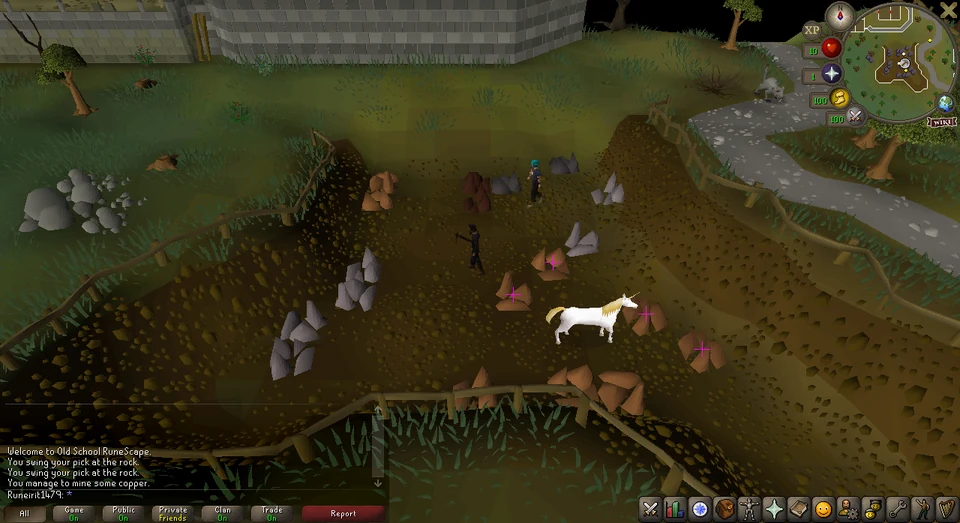

Our team robot’s test course: forward, a left and a right loop, a spin, then back.
Simulated odometry with a 3% error in wheel separation, ending about 9 cm from the start.
Now
I am studying for an MSc in Robotics at the University of Bristol, from September 2026 to September 2027, and learning C++ along the way.
Odometry for our team robot
I am responsible for the subsystem that estimates the robot’s position from its wheel motion, while my teammate builds the motor subsystem. My first report focused on wheel separation. We are now working towards a test course of two loops, a spin and a reverse, comparing the real robot with its digital twin.
Resistor colour bands, a machine vision group project
Our group of six is counting the colour bands on resistors from images. My part covers model selection, data selection and evaluation.
Work
Trainee, Software and Systems Development
August 2025 to July 2026
Labora AS, Trainee Salten, Bodø, Norway
I designed and led Labora Lagerstyring, a full-stack inventory system for laboratory environments. It digitised stock tracking, supplier management and procurement, replacing manual processes, and I took it from first concept to production.
Directed AI-assisted development with Cursor and Claude Opus on Next.js, TypeScript and Prisma, with a PostgreSQL database on Supabase.
Delivered real-time traceability, GS1‑128 barcode scanning, three-tier role-based access control and automated reorder alerts.
Verified the AI-assisted code with automated tests in Jest and Playwright and production monitoring in Sentry, and deployed through Docker, GitHub Actions and Vercel.
Projects
Autonomous drone control
2019
I re-engineered a drone’s control system with model-based design so that it could complete tasks on its own. I integrated machine vision with the Simulink control blocks for real-time feedback and navigation, analysed exported telemetry in MATLAB to tune the control loops, and coordinated with the mechanical team to integrate an automated hook.
Built with MATLAB, Simulink and machine vision.
Real-time computer vision agent
2021
A personal project in Python that captures a game window in real time, finds target objects with HSV colour filtering and OpenCV template matching, and then acts on them through automated mouse and keyboard control while tracking its own inventory.

A frame captured by the agent, with magenta crosses on the ore it found. The sliders run the colour filter from its code: each pixel is converted to hue, saturation and value, saturation is lowered by 4 and value raised by 90, and only pixels inside all three ranges are kept. Template matching then searches what is left.
I wrote a MATLAB program that generates the twist and chord distribution of a turbine blade and picks an aerofoil profile for each section. I 3D printed the parts, assembled them with a micro-system electrical generator, and tested the prototype in the lab, where it produced measurable electrical output.
The design method from my MATLAB program, rewritten in JavaScript. Change the operating point and it designs a new blade, with its twist, chord and power output. My original design was for 2,500 rpm in a 12 m/s wind, with three blades of 0.2 m radius. Once you change a setting, it shows as dashed lines. For reference, no turbine can beat the Betz limit, a power coefficient of 0.593.
For my MSc dissertation I tested 24,048 technical trading rules on Tesla stock data from 2010 to 2024 and compared the best of them with LSTM and SVM models. After correcting for data snooping with White’s Reality Check, none of the rules remained profitable at the 5% significance level, while an LSTM model using RSI and MACD inputs beat the best RSI rule out of sample by a statistically significant margin.
Machine learning model
Trading rule
Buy and hold
From my dissertation’s tables. Each rule is the best of its type on data from 2010 to June 2021, and the Reality Check tests it against buy and hold over that same period.
I led the code for a team project that compared four models on the 20 Newsgroups dataset: Naive Bayes, LSTM, CNN and BERT. A fine-tuned BERT model performed best, with 70% accuracy and a macro F1 score of 0.69.
F1 score for each of the 20 newsgroups, ordered by the average of the four models. Every model found the same three groups hardest, highlighted: talk.religion.misc, talk.politics.misc and alt.atheism.
I forecast weekly call demand for Jakarta’s charitable 118 ambulance service from 3,742 calls between January 2017 and October 2022. I compared five forecasting models against a naive baseline, from exponential smoothing to ARIMA and TBATS. Holt’s linear model was the most accurate in cross-validation, but I chose TBATS because it captured the more complex patterns of the COVID-19 period, and used it to forecast the next eight weeks. I presented the forecast and the busiest hours and days, to inform staff scheduling, on an A2 poster.
From the call data in the repo, grouped by week as in my R code, without the 8 calls that have no time. The shaded strip is the TBATS forecast. Hover, tap or use the arrow keys to read a week.
A health insurer wanted to know which of its customers would be interested in car insurance. Only 12.2% of the 304,887 customers in the data were. I chose features with chi-square tests and Pearson correlation, compared SMOTEENN, SMOTENC and class weights for the imbalance, and tuned XGBoost, random forest and k-nearest neighbours models. XGBoost did best, with a PR-AUC of 0.600 and a ROC-AUC of 0.775.
Interest by group is from the raw data in the repo, before cleaning. Model scores are for the best tuned version of each model.
Built with Python, scikit-learn, XGBoost and imbalanced-learn.
In an agile team, I designed the relational database, optimised its SQL queries and integrated the Java back end with the front end, refining the design through sprint reviews and retrospectives.
Built with Java, SQL, HTML and CSS, using Git and Jira.
Linear and logistic regression scorecards on German credit data, with features chosen by weight of evidence and information value.
Education
MSc Robotics
2026 to 2027, expected
University of Bristol
MSc Data Science and Analytics
2024
Cardiff University
Merit, including Computational Data Science (99%), Credit Risk Scoring (92%) and Distributed and Cloud Computing (91%).
Higher Diploma in Science in Agile Software Design
2022
Technological University of the Shannon, Athlone, Ireland
First Class Honours with 89.83% overall, including Object-Oriented Programming 1 and 2 (98% and 99%), Web Technologies (96%) and Networks and Cloud Architecture (95%).
BSc (Ordinary) Mechanical Engineering
2020
University of Edinburgh
Including Control and Instrumentation Engineering (81%).
Skills
Programming
Python, TypeScript, JavaScript, Java, SQL, MATLAB and R. Learning C++.
Robotics and engineering
Simulink and model-based design, machine vision with OpenCV, odometry, 3D printing and lab testing.
Software
Next.js, Prisma, PostgreSQL, REST APIs, Git, GitHub Actions, Docker, Jest, Playwright, Sentry and Azure.
Data and machine learning
NumPy, Pandas, scikit-learn, PyTorch, TensorFlow and Keras, Hugging Face, XGBoost and Tableau.
Ways of working
Agile delivery with Jira, and AI-assisted development with Cursor and Claude.
Languages
English
Fluent
Norwegian
Fluent
Pashto
Native
Urdu
Understand when spoken
Contact
The quickest way to reach me is by email. My CV is available on request.